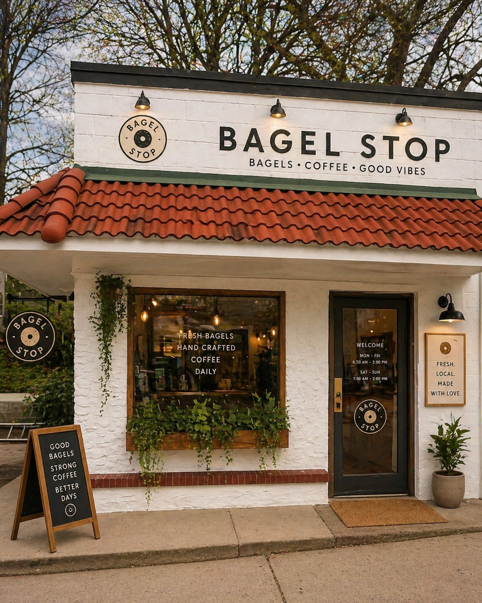

Why We Exist
Roots & Rise started as a simple idea — to bring a restorative, beautiful space to Payne Avenue and the East Side of St. Paul. Every bagel is made with intention. Every spread is crafted with care. We believe that where you eat shapes how you feel, and this neighborhood deserves something nourishing.
We're not a chain. We're not a franchise. We are a neighbor — showing up Tuesday through Saturday, early in the morning, because this community is worth it. Every cup of herbal tea, every fresh-baked bagel, every smile across the counter is a small act of love.
Heal
A restorative environment built from living plants, warm earthy tones, and intentional calm. Come in. Breathe. Stay a moment.
Connect
A gathering place for Payne Avenue's neighbors, families, and creatives. Always. Pull up a chair. You belong here.
Rise
Local jobs, local dollars, and local pride. Built from the ground up by an East Side woman for the East Side community.

926 Payne Ave · East Side St. Paul · Est. 2024
Tescia Bratcher, Founder
Tescia Bratcher is an East Side St. Paul woman who built Roots & Rise from the ground up — not because it was easy, but because it was necessary. She saw a community that deserved a beautiful, nourishing space and she created one. Her vision is simple: every person who walks through that door should feel seen, fed, and at home.
As a neurodivergent founder, Tescia brings a perspective that centers intentional design, sensory warmth, and deep community care. Roots & Rise is her love letter to the East Side.